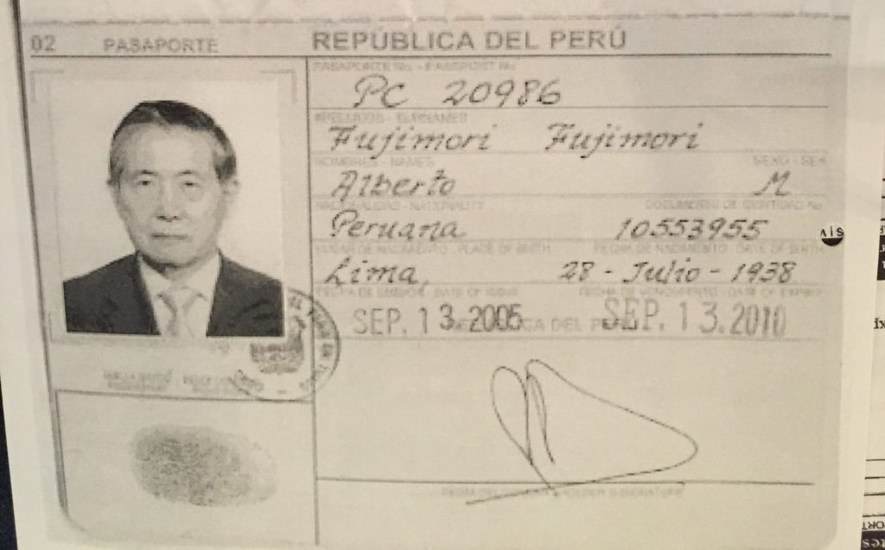

El Destino
Alberto Fujimori solía obsesionarse con anticipar su destino. La leyenda urbana cuenta que contrataba los servicios de parasicólogos, astrólogos y chamanes, entre los que destacaban figuras renombradas de la cultura popular limeña, como Carmela Polo Loayza (alias Madame Carmelí), Rosita Chung y Coty Zapata). De igual manera, son conocidos los viajes que realizaba con frecuencia a las alturas de la sierra de Piura para darse baños de florecimiento en Las Huaringas, lagunas altoandinas cuyas temperaturas oscilan entre los 5 y 7 grados centígrados durante la madrugada, horario recomendado por los curanderos de la zona para que sus rezos surtan efecto. Pero al parecer, esta supuesta afición es exagerada. Según un familiar cercano, Fujimori tuvo solo un par de incursiones a Las Huaringas, visitas que realizaba con fines políticos. Y no fue tan creyente de la parasicología. A lo largo de su vida, solo le prestó oídos a dos videntes. A Doña Bertha –quien le anticipó que sería elegido presidente de la república tres veces, cuando era catedrático de la Universidad Agraria y no soñaba siquiera con la política– y a Jennifer. Esta última fue recomendada por Gonzalo Sánchez de Lozada y Jamil Mahuad , mandatarios andinos que, hacia finales de los noventa, aun no comprobaban la falibilidad de la adivina.

Foto del pasaporte que utilizó Alberto Fujimori para entrar a Chile. Cortesía de Carlos Meléndez.
¿Se ha dado cuenta de que cada cierto tiempo un militar implicado en casos de derechos humanos se suicida? Saltan del techo, se pegan un tiro, lo que sea. ¿Sabe por qué se matan esos hombres? No lo hacen por vergüenza o culpa. Tampoco porque le tengan miedo a la cárcel o a la presión social, no. Esos hombres se matan porque en sus cabezas y en sus corazones estaban convencidos de estar haciendo el bien.
– Bala Loca, teleserie chilena.